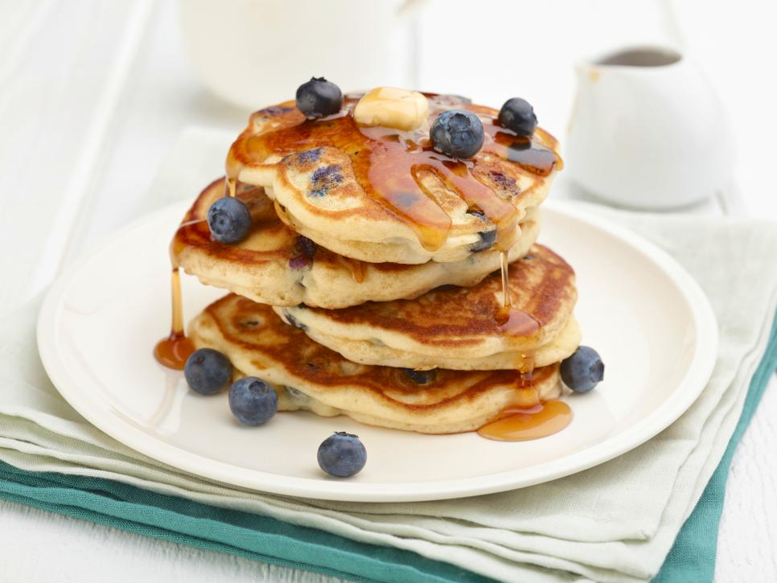
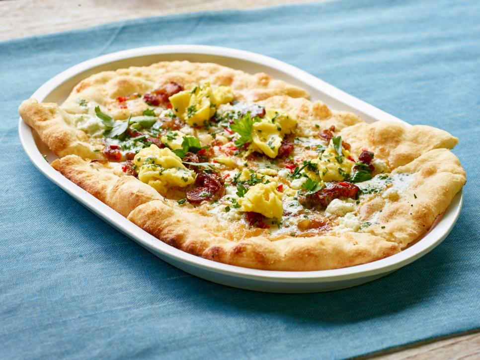

Treat your mom on her special day with favorite recipes for pancakes,
frittata, cinnamon rolls, waffles and more from Food Network.
Blueberry Pancakes
Level:Easy Prep:15min Yield:4 to 6
Total:30min Cook:15min

DIRECTIONS:
1
Sift the flour, sugar, baking powder,
baking soda and salt into a large mixing bowl.
In a separate large bowl, lightly whisk the eggs.
Add the milk, sour cream,
half the melted butter and the vanilla, whisking to blend.
Make a well in the dry ingredients and pour the egg mixture into it.
Whisk the ingredients together just until blended.
Fold the blueberries and lemon zest into the batter.
2
Heat a large skillet or griddle over medium heat
and coat with some of the remaining melted butter.
For each pancake, pour about 1/4 cup of the batter into the hot skillet.
Cook 3 or 4 pancakes at a time, depending on the size of the skillet.
If the batter seems too thick, thin it with 1 to 2 tablespoons milk.
When bubbles begin to form and "pop" on the pancake's surface,
after about 1 minute, and the outer edge looks done,
flip it over and cook briefly for about 30 seconds on the other side.
2 Tarte Flambe with Softly Scrambled Eggs and Goat Cheese
"I turned a traditional French tart into more of a pizza,
which works really well for brunch," says Bobby.
Level:Easy Prep:15min Yield:6 servings
Total:1 hr 45 min Inactive:30min Cook:1hr

DIRECTIONS:
1
Whisk together the creme fraiche, parsley, chives and tarragon in a bowl;
season with salt and pepper. Cover and refrigerate for 30 minutes.
2
Preheat the oven to 400 degrees F. Divide the dough in half.
Roll each piece into a very thin 10-by-12-inch rectangle.
Brush with canola oil, place on baking sheets and bake until lightly golden brown, about 10 minutes.
3
Heat 1 tablespoon of the oil and 1 tablespoon of the butter in a small saute pan over medium heat.
Add the onion and sugar and cook slowly, stirring occasionally, until caramelized, about 30 minutes.
Season with salt and pepper.
4
Heat the remaining 1 tablespoon oil in a medium saute pan over medium heat.
Add the bacon and cook until golden brown and crisp, about 10 minutes.
Remove with a slotted spoon to a plate lined with paper towels.
5
Divide the creme fraiche between the pizzas, spreading it out.
Divide the cheddar on top and then add the onion and bacon.
Bake until the cheese has melted, about 5 minutes.
6
Meanwhile, heat the remaining 3 tablespoons butter in a medium nonstick saute pan over medium heat.
Add the Fresno chile and cook until soft, about 2 minutes. Whisk the eggs in a bowl until smooth;
season with salt and pepper. Pour the eggs into the pan and stir constantly with a rubber spatula until soft curds form. Add the goat cheese.
7
Divide the scrambled eggs between the two pizzas and garnish with more herbs.